amtek
amtek/0amtek/1amtek/2amtek/3amtek/4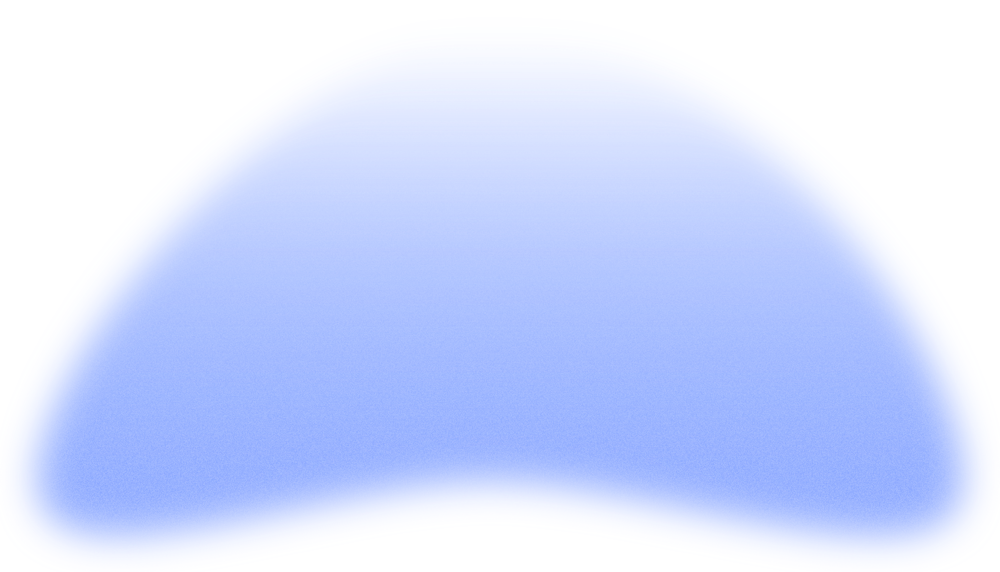
amtek/5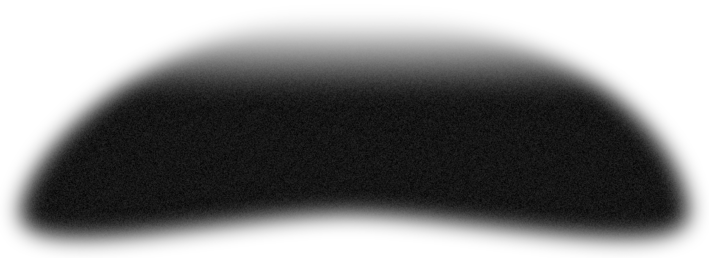
amtek/6amtek/7amtek/8amtek/9amtek/10amtek/11amtek/12amtek/13amtek/14amtek/15amtek/16amtek/17amtek/18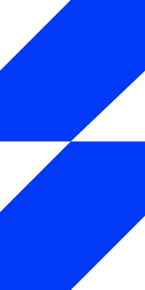
amtek/19dl-studio
dl-studio/0dl-studio/1dl-studio/2dl-studio/3dl-studio/4dl-studio/5dl-studio/6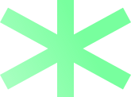
dl-studio/7dl-studio/8dl-studio/9dl-studio/10dl-studio/11dl-studio/12dl-studio/13dl-studio/14dl-studio/15dl-studio/16dl-studio/17dl-studio/18dl-studio/19red-path
 red-path/0red-path/1
red-path/0red-path/1 red-path/2red-path/3red-path/4red-path/5
red-path/2red-path/3red-path/4red-path/5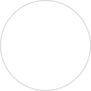
red-path/6 red-path/7red-path/8red-path/9red-path/10
red-path/7red-path/8red-path/9red-path/10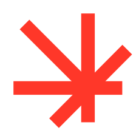
red-path/11red-path/12red-path/13dl-games
dl-games/0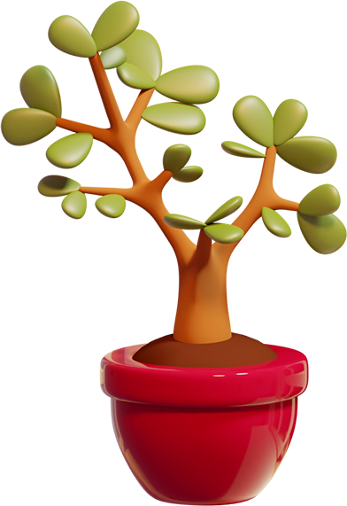
dl-games/1dl-games/2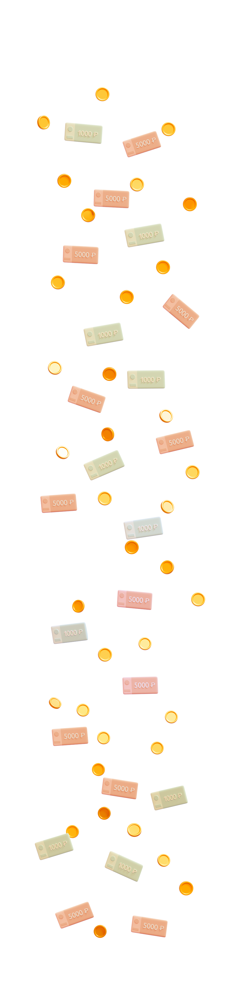
dl-games/3
dl-games/4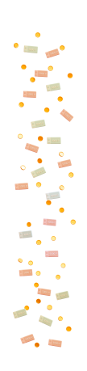
dl-games/5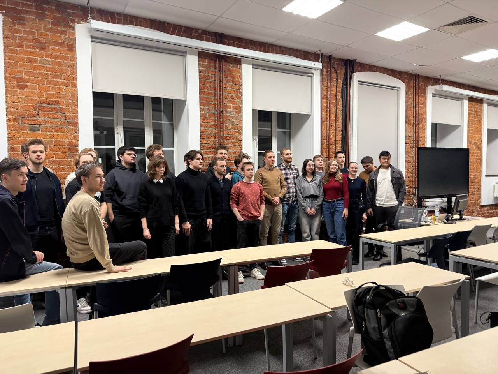
dl-games/6